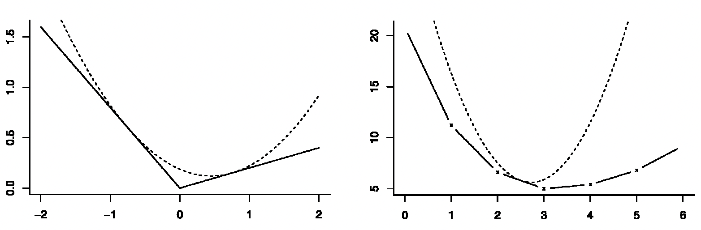
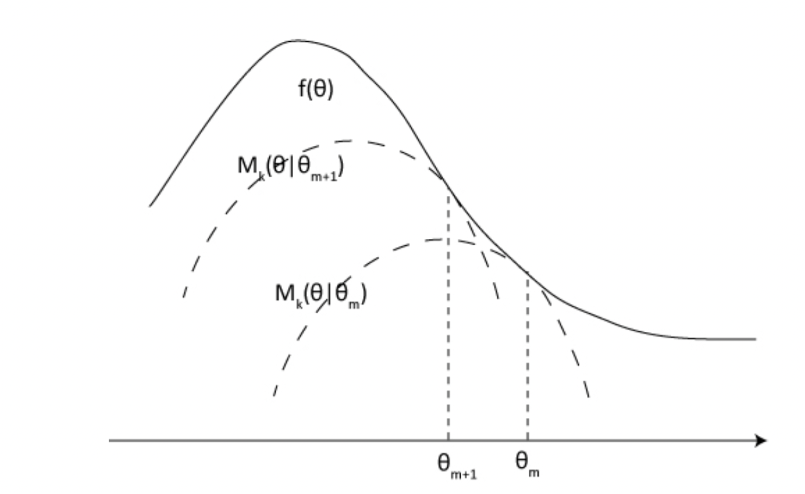

The EM algorithm II: theory and inference
Overview
Today, we cover:
- The MM Algorithm
Announcements
- HW3 posted and due 3/4 at 10:00AM
Readings:
- Hunter and Lange: A tutorial on MM algorithms, The American Statistician
Tutorial article is very concise but overall pretty good if you want to learn more.
EM as MM
The EM is a minorization approach. Instead of directly maximizing. the log-likelihood, which is hard, the algorithm constructs a minorizing function and optimizes that function instead.
A function \(g\) minorizes \(f\) over \(\mathcal{X}\) at \(y\) if:
- \(g(x) \le f(x) \mbox{ for all } x \in \mathcal{X}\)
- \(g(y) = f(y)\)
MM algorithm
Stands for “Majorize-Minimization” or “Minorize-Maximization”, depending on whether the desired optimization is a minimization or a maximization
Not actually an algorithm, but a strategy for constructing optimization algorithms
EM is a special case
MM algorithm
Stands for “Majorize-Minimization” or “Minorize-Maximization”,depending on whether the desired optimization is a minimization or a maximization
Not actually an algorithm, but a strategy for constructing optimization algorithms
EM is a special case
Idea: MM algorithm operates by creating a surrogate function that minorizes or majorizes the objective function. When the surrogate function is optimized, the objective function is driven uphill or downhill as needed.
Definition of an MM algorithm for Minimization
We first focus on the minimization problem, in which MM = Majorize–Minimize.
- A function \(g(\theta|\theta^t)\) is said to majorize the function \(f(\theta)\) at \(\theta^t\) if
\[\begin{align} f(\theta) &\le g(\theta|\theta^t) \mbox{ for all } \theta\\[2mm] f(\theta^t) &= g(\theta^t|\theta^t) \end{align}\]
We choose a majorizing function \(g(\theta|\theta^t)\) and minimize it, instead of minimizing \(f(\theta)\). Denote \(\theta^{t+1} =\arg\min_{\theta}g(\theta|\theta^t)\). Iterate until \(\theta^t\) converges.
Descent property: \(f(\theta^t) \le g(\theta^{t+1}|\theta^t)\le g(\theta^t|\theta^t) = f(\theta^t)\)
I think pictures really help here
Definition of an MM algorithm for Minimization
Two examples: Dotted line here is the majorizing function
MM algorithm for Maximization
In a maximization problem, MM = Minorize–Maximize.
To maximize \(f(\theta)\), we minorize it by a surrogate function \(g(\theta|\theta^t)\) and maximize \(g(\theta|\theta^t)\) to produce the next iteration \(\theta^{t+1}\)
\(g(\theta|\theta^t)\) minorizes \(f(\theta)\) at \(\theta^t\) if \(-g(\theta|\theta^t)\) majorizes \(-f(\theta)\)

Separation of high-dimensional parameter spaces
One of the key criteria in judging majorizing or minorizing functions is their ease of optimization.
- Successful MM algorithms in high-dimensional parameter spaces often rely on surrogate functions in which the individual parameter components are separated, i.e., for \(\theta = (\theta_1, \ldots, \theta_p)\),
\[g(\theta|\theta^t) = \sum_{j = 1}^p q_j(\theta_j)\] where \(q_j(\cdot)\) are univariate functions.
Because the \(p\) univariate functions may be optimized one by one, this makes the surrogate function easier to optimize at each iteration.
Advantages of the MM algorithm
Numerical stability: warranted by the descent (or ascent) property
Simplicity: Turn a difficult optimization problem into a simple one
- It can turn a non-differentiable problem into a smooth problem (Example 2).
- It can separate the parameters of a problem (Example 3).
- It can linearize an optimization problem (Example 3).
- It can deal gracefully with equality and inequality constraints (Example 4).
- It can generate an algorithm that avoids large matrix inversion (5).
Iteration is the price we pay for simplifying the original problem.
Seems like magic. How do you actually construct the surrogate function?
EM algorithm vs. MM algorithm
EM: The E-step creates a surrogate function by identifying a complete-data log-likelihood function and evaluating it with respect to the observed data. The M-step maximizes the surrogate function. Every EM algorithm is an example of an MM algorithm.
EM: demands creativity in identifying the missing data (complete data) and technical skill in calculating an often complicated conditional expectation and then maximizing it analytically.
MM: requires creativity in identifying the surrogate function, using proper inequalities.
Inequalities to construct majorizing/minorizing function
Property of convex function: A function \(f: R^p \to R\) is \(\textbf{convex}\) if for all \(x_1, x_2 \in R^p\) and all \(\alpha \in [0,1]\), \[ f(\alpha x_1 + (1-\alpha)x_2)\leq \alpha f(x_1) + (1-\alpha) f(x_2) \]
Jensen’s inequality: for any convex function \(f\) and r.v. \(x\),
\[f[E(x)] \le E[f(x)]\]
- Supporting hyperplanes: If \(f\) is convex and differentiable, then
\[f(y)\geq f(x)+\nabla f(x)^\top(y-x), \forall x,y\in\mathbb{R}^p,\]
and equality holds when \(y = x\).
- For concave function, jensen’s inequality reverses
- Draw supporting hyperplane from slide 7 of Hao MM lecture
Inequalities (continued)
Arithmetic-Geometric Mean Inequality: For nonnegative \(x_1,\ldots, x_m,\) \[\sqrt[m]{\prod_i^mx_i}\le \frac{1}{m}\sum_{i=1}^mx_i,\] and the equality holds iff \(x_1 = x_2 = \ldots = x_m\).
Cauchy-Schwartz Inequality: for \(p\)-vectors \(x\) and \(y\),
\[x^Ty\le ||x||\cdot ||y||,\]
where \(||x|| = \sqrt{\sum_i^p x_i^2}\) is the norm of the vector.
Check that this definition of Cauchy-Schwartz is correct. Shouldn’t this be called the L2 norm? Or is it any norm?
Inequalities (continued)
- Quadratic upper bound: If a convex function \(f(x)\) is twice differentiable and has bounded curvature, then we can majorize \(f(x)\) by a quadratic function with sufficiently high curvature and tangent to \(f(x)\) at \(x^t\). In algebraic terms, we can find a positive definite matrix \(M\) such that \(M-\nabla^2f(x)\) is nonnegative for all \(x\), then
\[f(x)\le f(x^t) + \nabla f(x^t)^T(x-x^t) + \frac{1}{2}(x-x^t)^TM(x-x^t)\] provides a quadratic upper bound that majorizes \(f(x)\).
How do you check if it has bounded curvature?
Example 1: EM algorithms
- By Jensen’s inequality and the convexity of the function \(-\log(y)\), we have for probability densities \(a(y)\) and \(b(y)\) that
\[-\log \left\{E\left[\frac{a(y)}{b(y)}\right]\right\} \le E\left[ -\log\frac{a(y)}{b(y)} \right]\]
- \(Y\) has the density \(b(y)\), then \(E[a(y)/b(y)] = 1\). The left hand side vanishes, and we obtain \[E[\log a(y)] \le E[\log b(y)],\]
the Kullback-Leibler divergence.
- This inequality guarantees that a minorizing function is constructed in the E-step of any EM algorithm, making every EM algorithm an MM algorithm.
I’m glossing over a lot of details here but this is basically shorthand for another proof of EM that uses Jensen’s inequality
Example 1: EM algorithms, cont
- We have the decomposition
\[\begin{align} Q(\theta|\theta^t) &= E_z\left[\log p(y, z |\theta)|y, \theta^t\right]\\[2mm] &= E\left[\log p(z|y,\theta)|y, \theta^t\right] + \log p(y|\theta) \end{align}\]
BY KL divergence,
\[E\left[\log p(z|y,\theta)|y, \theta^t\right] \le E\left[\log p(z|y,\theta^t)|y, \theta^t\right] \forall \theta\]
We obtain the surrogate function that minorizes the objective function
\[ \log p(y|\theta) \ge Q(\theta|\theta^t) - E\left[\log p(z|y,\theta^t)|y, \theta^t\right]\]
Example 2: finding a sample median
- Consider the sequence of numbers \(y_1, \ldots y_n\). The sample median \(\theta\) minimizes the non-differentiable objective function
\[f(\theta) = \sum_i^n |y_i-\theta|.\]
- The quadratic function
\[h_i(\theta|\theta^t) = \frac{(y_i-\theta)^2}{2|y_i-\theta^t|}+\frac 1 2 |y_i-\theta^t|\] majorizes \(|y_i-\theta|\) at the point \(\theta^t\) (Arithmetic-Geometric Mean Inequality).
- Hence, \(g(\theta|\theta^t) = \sum_i^n h_i(\theta|\theta^t)\) majorizes \(f(\theta)\).
Can we draw a picture of this to make it more obvious?
Example 2: finding a sample median (continued)
We have the following objective function (a weighted sum of squares):
\[g(\theta|\theta^t) = \frac{1}{2}\sum_i^n\left[\frac{(y_i-\theta)^2}{|y_i-\theta^t|}+|y_i-\theta^t|\right]\] - The minimum of \(g(\theta|\theta^t)\) occurs at
\[\theta^{t+1} = \frac{\sum_i^nw_i^ty_i}{w^t_i}, w_i^t = |y_i-\theta^t|^{-1}\] - This algorithm works except when a weight \(w_i^t=\infty\). It generalizes to sample quantiles, LASSO, and quantile regression.
Might be good to think through how to generalize this to a non-median quantile
Example 2: finding a sample median (continued)
Do lab exercise 1
Finding a sample quantile
Median example generalizes to finding a sample quantile. A \(q\)th sample quantile of \(y_1,\ldots, y_n\) is one that minimizes the function
\[f(\theta) = \sum_i p_q(y_i-\theta)\]
Where \(p_q(\theta) = q\theta\) if \(\theta \ge 0\) and \(p_q(\theta) = -q(1-\theta)\) if \(\theta < 0\). A majorizing function is
\[g_q(\theta|\theta^t) = \frac{1}{4}\sum_i^n\left[\frac{(y_i-\theta)^2}{|y_i-\theta^t|}+ (4q-2)(y_i-\theta)+ |y_i-\theta^t|\right]\]
Finding a sample quantile
Example 3: Bradley-Terry Ranking
Consider a sports league with \(n\) teams. Assign team \(i\) the skill level \(\theta_i\), where \(\theta_1 = 1\) for identifiability. Bradley and Terry proposed the model
\[Pr(i \mbox{ beats } j) = \frac{\theta_i}{\theta_i + \theta_j}.\]
- If \(b_{ij}\) is the number of times \(i\) beats \(j\), then the likelihood of the data is
\[L(\theta) = \prod_{i\ne j}\left(\frac{\theta_i}{\theta_i + \theta_j}\right)^{b_{ij}}.\] We estimate \(\theta\) by maximizing \(f(\theta) = \log L(\theta)\) and then rank the teams on the basis of the estimates.
Example 3: Bradley-Terry Ranking
The log-likelihood is \(f(\theta) = \sum_{i \ne j}b_{ij}[\log\theta_i - \log(\theta_i + \theta_j)]\).
We need to linearize the term \(-\log(\theta_i + \theta_j)\) to separate parameters.
This whole lecture is more about neat things you should come back to if you need more rather than stuff to build on or try yourself, necessarily
Example 3: Bradley-Terry Ranking (continued)
- By the supporting hyperplane property when \(f\) is convex and the convecity of \(-\log(\cdot)\), we have
\[-\log(y)\ge -\log(x) - x^{-1}(y-x) = -\log(x) - y/x+ 1\]
- The inequality indicates that
\[-\log(\theta_i+\theta_j) \ge -\log(\theta_i^t+\theta_j^t) - \frac{\theta_i+\theta_j}{\theta_i^t+\theta_j^t}+ 1\]
Example 3: Bradley-Terry Ranking (continued)
- Thus, the minorizing function is
\[g(\theta|\theta^t) = \sum_{i\ne j}b_{ij}\left[ \log\theta_i -\log(\theta_i^t +\theta_j^t) - \frac{\theta_i + \theta_j}{\theta_i^t+\theta_j^t} + 1\right].\]
- The parameters are now separated. We can easily find the optimal point
\[\theta_i^t = \frac{\sum_{i\ne j}b_{ij}}{\sum_{i\ne j}(b_{ij}+b_{ji})/(\theta_i^t + \theta_j^t)}\]
BT Ranking
Lab exercise 2
Example 4: Handling constraints
Consider the problem of minimizing \(f(\theta)\) subject to the constraints \(v_j(\theta)\ge 0\) for \(1\le j\le q\), where each \(v_j(\theta)\) is a concave, differentiable function.
By the supporting hyperplane property and the convexity of \(-v_j(\theta)\),
\[v_j(\theta^t) - v_j(\theta) \ge -[\nabla v_j(\theta^t)]^T(\theta-\theta^t) \tag{2}.\]
- Again, by the supporting hyperplane property and the convexity of \(-\log(\cdot)\), we have \(-\log y + log x \ge -x^{-1}(y-x) \implies x(-\log y + \log x) \ge x-y\). Then:
\[\begin{equation} v_j(\theta^t)[-\log v_j(\theta)+\log v_j(\theta^t)]\ge v_j(\theta^t)-v_j(\theta). \end{equation}\tag{3}\]
Example 4: Handling constraints
By (2) and (3) on the previous slide,
\[v_j(\theta^t)[-\log v_j(\theta)+\log v_j(\theta^t)] + [\nabla v_j(\theta^t)]^T(\theta-\theta^t) \ge 0\]
and the equality holds when \(\theta = \theta^t\).
- Summing over \(j\) and multiplying by a positive tuning parameter \(\omega\), we construct the surrogate function that majorizes \(f(\theta)\),
\[g(\theta|\theta^t) = f(\theta) + \omega \sum_{j = 1}^q \left[v_j(\theta^t)\log\frac{v_j(\theta^t)}{v_j(\theta)} + [\nabla v_j(\theta^t)]^T(\theta-\theta^t) \right] \ge f(\theta)\]
Handling constraints (continued)
Note:
- Majorization gets rid of the inequality constraints!
- The presence of \(\log v_j(\theta)\) ensures \(v_j(\theta)\ge 0\)
An initial point \(\theta^0\) must be selected with all inequality constraints strictly satisfied. All iterates stay within the interior region but allows strict inequalities to become equalities at the limit
The minimization step of the MM algorithm can be carried out approximately by Newton’s method.
Where there are linear equality constraints \(A\theta = b\) in addition to the inequality constraints \(v_j(\theta)\ge 0\), these should be enforced by introducing Lagrange multipliers during the minimization of \(g(\theta|\theta^t)\).
We will talk more about constrained optimization and consider different approaches in a later lecture
Comparing MM and Newton’s Method
- Convergence rate
- N: a quadratic rate \(\lim ||\theta^{t+1}-\hat{\theta}||/||\theta^{t+1}-\hat{\theta}||^2 = c\)
- MM: a linear rate \(\lim ||\theta^{t+1}-\hat{\theta}||/||\theta^{t+1}-\hat{\theta}|| = c < 1\)
- Complexity of each iteration
- N: requires evaluation and inversion of Hessian, \(O(p^3)\)
- MM: separates parameters, \(O(p)\) or \(O(p^2)\)
- Stability of the algorithm
- N: behaves poorly if started too far from an optimum point
- MM: guaranteed to increase/decrease the objective function at every iteration
Comparing MM and Newton’s Method
In conclusion, well-designed MM algorithms tend to require more iterations but simpler iterations than Newton’s method; thus MM sometimes enjoy an advantage in computation speed and numerical stability.
Resources
–